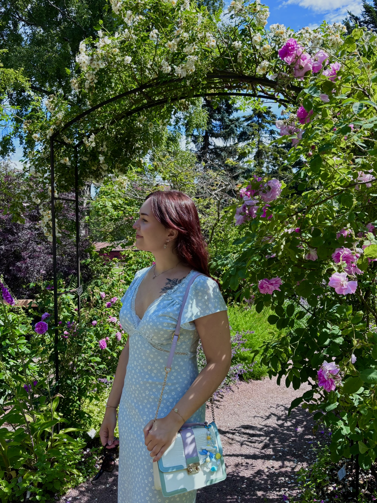

Who am I?
My name is Ida, and I am a third year student at NTNU. My birthday is on the 13th of November, which means I am a Scorpio (Sun and rising!). I was born and raised in Hamar, Norway, and I have lived here my whole life. I study graphic design, and I love creating visually appealing content! Before NTNU, I wasn't sure what I wanted to do. I tried different things, but I always felt like something was missing. I have tried working in stores, in office administration, and even a bit of healthcare. I knew I was missing something creative in my every day life. Now I am happy to say that I think I'm on a good path, and I am so excited to see where my studies will take me in the future!

Hobbies
- I love to paint! I enjoy creating different artworks and try out new techniques.
- Most days I spend my time gaming on a pc. Currently, I'm playing a lot of story games.
- I've always loved to read. My favoruite book is If He Had Been With Me by Laura Nowlin.
Games I love
Gaming has been a big part of my life for years. I love getting lost in immersive stories and exploring different worlds. One game that really captured my attention was The Last of Us. The story was so emotional and the characters were so well-developed. Ellie is probably one of my favorite characters. I love it when she shows her vulnerability and her strenght, especially through her quote:
I can make it quick or I can make it so much worse.
This quote really captures her character and the emotional depth of the game.
Music I enjoy
I really enjoy listening to different genres of music. Everything from pop to rock, even some metal. My current obsession is the artist RAYE, she creates really unique songs which can be categorized under both pop and blues. My music really changes based on my mood. At the gym I often listen to Synestia and Spiritbox. They are also two of my current obsessions. While driving, I often listen to music I can sing loudly to, like Panic! At The Disco and The Wombats. I could go on and on about my favorite bands, but we'd be here all day!